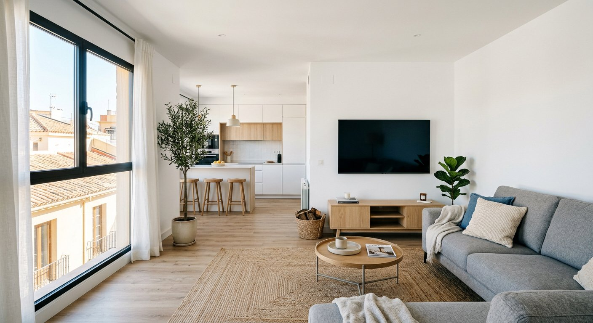

Si quieres invertir en inmuebles en Madrid, no te ofrecemos una reforma suelta: Te ofrecemos asociarte con nosotros. Tú quieres hacer una inversión y nosotros somos tu socio de obra: Buscamos el inmueble, hacemos la reforma y buscamos la rentabilidad.
TADELART no compra inmuebles. Lo que hacemos es asociarnos con un inversor: Podemos buscar pisos y locales para invertir, o reformar el inmueble que tú ya tienes o ya has comprado, para venderlo, alquilarlo o convertir un local en vivienda. Trabajamos con personal propio altamente cualificado y control de todos los oficios, para que tú solo tengas que decidir, no coordinar gremios.
Trabajamos en todo Madrid capital: Madrid Central, Chamberí, Salamanca, Retiro, Chamartín, Tetuán, Carabanchel, Arganzuela, Latina y toda la Comunidad de Madrid, con especial presencia en Alcorcón, Móstoles, Arroyomolinos, Navalcarnero, Leganés, Fuenlabrada, Villaviciosa de Odón y Pozuelo de Alarcón. Conocemos las viviendas típicas de la zona, desde pisos de los años 60, 70 y 80 en bloques y fincas con patio hasta áticos, dúplex y chalets de las zonas más nuevas.